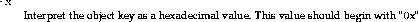

Usage:
genior [-x] <Type ID> <hostname> <port number> [object key]
genior generates a stringified object reference from the arguments supplied to it. If an object key argument isn't supplied, it will use an object key generated by omniORB2.
The options are:
